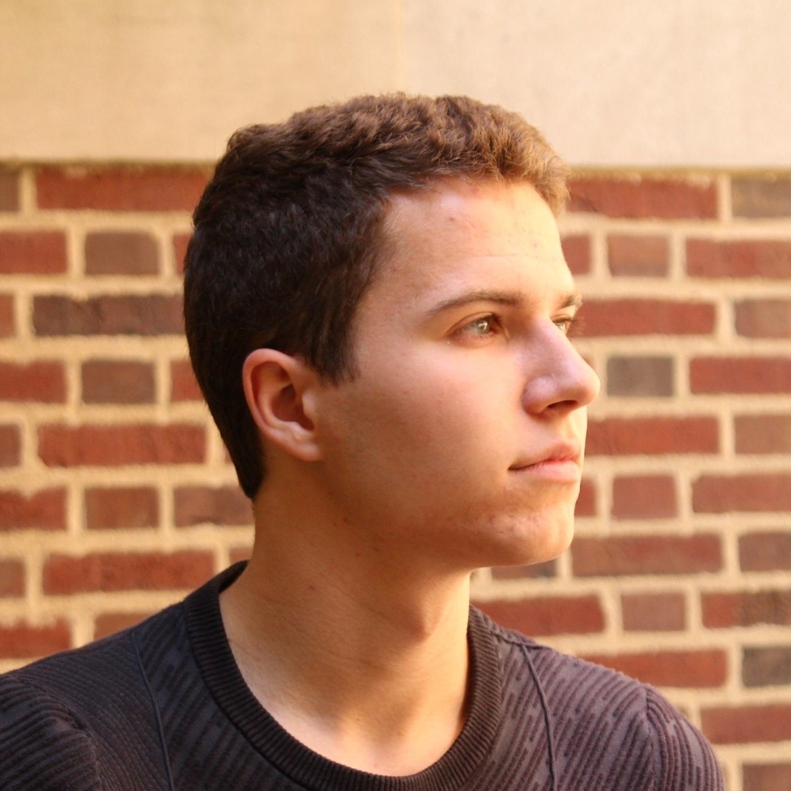

ROBBIE SIECZKOWSKI
Informatics Scholar and Game/XR Developer

I am a fifth-year Informatics PhD student at the University of Illinois at Urbana-Champaign, advised by Dr. Jenny Oyallon-Koloski (Associate Professor, College of Media).
My interdisciplinary Informatics research approach spans the history, theory, methods, and practice of serious games, immersive media, and videographic criticism.
In my RA position, I serve as Producer of the student-run university game stu/dio. In my TA positions, I lead discussion sections in film production and introductory game studies and design.
I run a speaker series at the VR Club on campus, hosting local and global Extended Reality (XR = VR/MR/AR) developers and researchers.
In my free time, I play games, play guitar and sing, practice yoga and endurance sport, go camping, and make small digital media projects.
See Robbie's university page here.
ACADEMIC WORK
"The mv lab spatial trainer MR V1.0.0 demo"
The mv lab spatial trainer MR is a mixed reality research project developed by Robbie Sieczkowski under the supervision of his Informatics PhD advisor, Dr. Jenny Oyallon-Koloski, a Certified Movement Analyst in Laban/Bartenieff Movement Studies. The goal of the app is to provide bodies an opportunity to incorporate Laban Movement Analysis information, such as movement scales, through interaction with a digital, spatial environment. The app guides users through a scaffolded experience with voiceover from Jenny Oyallon-Koloski as the subject matter expert. Initial app development was completed on a 2024 independent study supervised by Dr. Jenny Oyallon-Koloski in the mv lab environment, and the current version was upgraded to Unity 6 in the Game Studies and Design PLAYLab.
Project GitHub here
"A 360-degree experiment in deformation with The Young Girls of Rochefort (1967)"
A 360° videographic essay about the camera as presence, or in other words, the camera as "being there." Through deformation and remix of two musical numbers from Jacques Demy's 1967 "The Young Girls of Rochefort", the wordless essay explores how a cinematographer's spatial choices map out our relationship with the three-dimensional space of a movie set in 2D.
"The movement visualization lab VR Tool Demonstration"
A 360° compilation of the mv lab VR tool's various scenes arranged for the 2021 UIUC Undergraduate Research Symposium. Dance data created by Sarah Marks Mininsohn and Kayt MacMaster.
CREATIVE PROJECTS
"2025 in some iPhone video"
In 2021, I set out to make a short video edit every year I could and post it to YouTube. In 2024 and 2025, my video edits have comprised of mostly personal iPhone video. I have been editing video with Premiere Pro for years. I continue to stray further away from continuity narrative style editing, splicing together disconnected clips from my iPhone camera roll in a manner that is not easily interpretable as connected.
"Travelogue, or: buy some furniture and give the cat a name"
Curious about the Workaway experience? I split my 2022 summer between a cave home in Spain and an animal shelter in Thailand. Here’s my short film about it.
"meditation"
A fun edit for one of the all-time coolest animation series. 3,000 views on YouTube... Mom, I made it!